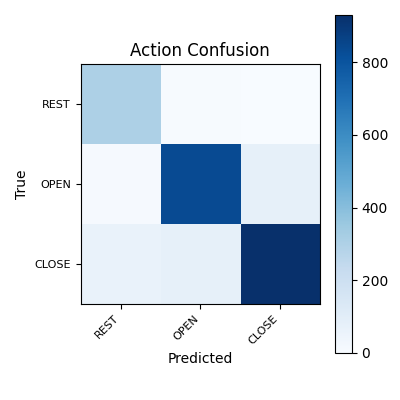
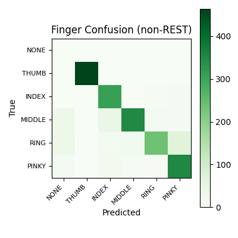

| Event | Session | Windows | REST TPR | Pred action counts | Pred pair counts | Median p(REST) | Median p(OPEN) | Median p(CLOSE) | Start | End |
|---|---|---|---|---|---|---|---|---|---|---|
| 0 | 2-M16_20260317_190134 | 100 | 100.00% | REST(0)=100 | {"REST+NONE": 100} | 0.900 | 0.021 | 0.075 | 61.800 | 67.000 |
| 3 | 2-M16_20260317_190134 | 79 | 100.00% | REST(0)=79 | {"REST+NONE": 79} | 0.796 | 0.083 | 0.124 | 115.300 | 119.850 |
| 5 | 2-M16_20260317_190134 | 88 | 94.32% | REST(0)=83, OPEN(1)=5 | {"REST+NONE": 83, "OPEN+INDEX": 4, "OPEN+MIDDLE": 1} | 0.681 | 0.176 | 0.149 | 165.150 | 170.150 |
| 11 | 2-M16_20260317_190134 | 111 | 98.20% | REST(0)=109, OPEN(1)=2 | {"REST+NONE": 109, "OPEN+INDEX": 2} | 0.744 | 0.152 | 0.106 | 231.150 | 236.900 |
| 21 | 2-M16_20260317_190134 | 92 | 91.30% | REST(0)=84, OPEN(1)=5, CLOSE(2)=3 | {"REST+NONE": 84, "OPEN+MIDDLE": 3, "CLOSE+RING": 3, "OPEN+INDEX": 2} | 0.578 | 0.193 | 0.211 | 418.400 | 423.550 |
| 22 | 2-M16_20260317_190134 | 135 | 91.85% | REST(0)=124, OPEN(1)=11 | {"REST+NONE": 124, "OPEN+MIDDLE": 10, "OPEN+INDEX": 1} | 0.676 | 0.209 | 0.119 | 435.550 | 442.500 |
| 28 | 2-M16_20260317_190134 | 115 | 98.26% | REST(0)=113, OPEN(1)=2 | {"REST+NONE": 113, "OPEN+MIDDLE": 2} | 0.823 | 0.111 | 0.072 | 546.650 | 554.050 |
| 29 | 2-M16_20260317_190134 | 132 | 100.00% | REST(0)=132 | {"REST+NONE": 132} | 0.931 | 0.039 | 0.030 | 561.050 | 568.200 |
| 30 | 2-M16_20260317_190134 | 140 | 100.00% | REST(0)=140 | {"REST+NONE": 140} | 0.817 | 0.116 | 0.075 | 574.900 | 583.100 |
| 31 | 2-M16_20260317_190134 | 148 | 99.32% | REST(0)=147, OPEN(1)=1 | {"REST+NONE": 147, "OPEN+MIDDLE": 1} | 0.837 | 0.097 | 0.066 | 590.200 | 598.900 |
| 577 | 2-M16_20260216_150056_01 | 205 | 87.80% | REST(0)=180, OPEN(1)=19, CLOSE(2)=6 | {"REST+NONE": 180, "OPEN+PINKY": 19, "CLOSE+INDEX": 6} | 0.845 | 0.114 | 0.032 | 3078.400 | 3088.850 |
| Finger | Correct | Support | Predicted | Accuracy | Precision | Recall | F1 |
|---|---|---|---|---|---|---|---|
| THUMB | 464 | 466 | 464 | 99.57% | 100.00% | 99.57% | 99.78% |
| INDEX | 309 | 327 | 379 | 94.50% | 81.53% | 94.50% | 87.54% |
| MIDDLE | 350 | 443 | 379 | 79.01% | 92.35% | 79.01% | 85.16% |
| RING | 239 | 365 | 260 | 65.48% | 91.92% | 65.48% | 76.48% |
| PINKY | 352 | 393 | 437 | 89.57% | 80.55% | 89.57% | 84.82% |


{
"schema_version": 1,
"created_utc": "2026-03-19T07:58:58.421586+00:00",
"npz_path": "Projects/2-M16/subjects/2-M16/sessions/combined_20260319_081200_pruned_rest_events_0_1_2/processed/eeg_windows.npz",
"run_dir": "Projects/2-M16/subjects/2-M16/sessions/combined_20260319_081200_pruned_rest_events_0_1_2/processed/models/20260319_075520",
"train": {
"avg_loss": 0.7713671160153746,
"action_acc": 0.863921611802268,
"finger_acc": 0.8679790748898678,
"epochs": 60,
"batch_size": 64,
"lr": 0.001,
"seed": 43
},
"temperature_scaling": {
"action_temperature": 1.0,
"finger_temperature": 1.0,
"applicability_temperature": 1.0,
"fit_sample_count": 1063,
"fit_non_rest_count": 836,
"has_applicability_temperature": true,
"source": "fit_on_holdout",
"metrics": {
"action": {
"nll_before": 0.43602868914604187,
"nll_after": 0.43602868914604187
},
"finger": {
"nll_before": 0.42946797609329224,
"nll_after": 0.42946797609329224
},
"applicability": {
"nll_before": 0.22846010327339172,
"nll_after": 0.22846010327339172
}
}
},
"test": {
"action_acc": 0.8978704910908301,
"finger_acc_non_rest": 0.870110330992979,
"n_test": 2301,
"n_test_non_rest": 1994
},
"artifacts": {
"model": "finger_action_model.pt",
"scaler": "scaler.npz",
"preds": "test_predictions.npz",
"temperature_scaling": "temperature_scaling.json"
}
}